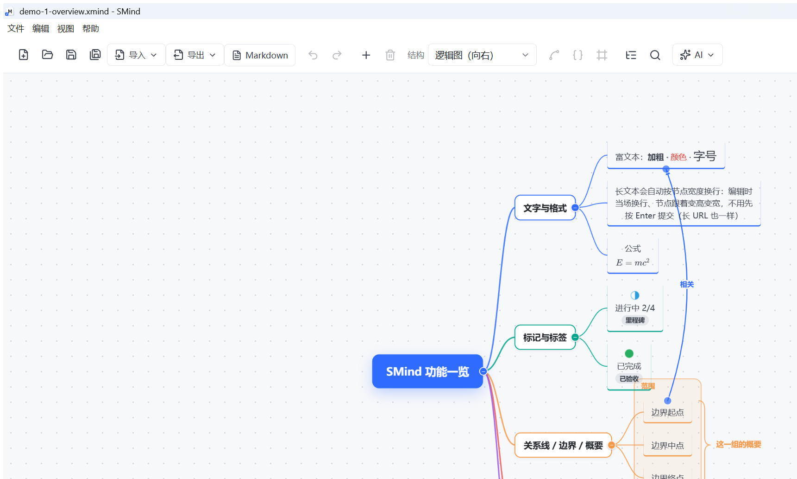
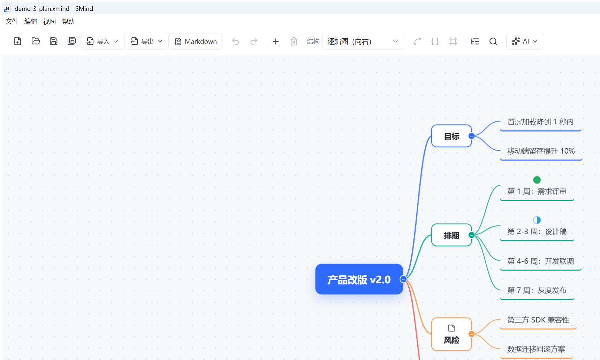

SMind 是一款本地优先的思维导图软件：原生 .xmind 格式、与 Xmind 直接互通、 无账号、无服务器，除了你主动点 AI，全程离线。

三个一句话就能说清的理由
文件就是普通的 .xmind，存在你自己的磁盘上。没有云端，也就没有"哪天停服"的问题——本地软件停更 ≠ 产品死亡，最后买到的版本永远离线可用。
能直接打开 Xmind 2020+ 与 Xmind 8 的文件，不认识的元素原样保留、另存不丢数据；也兼容亿图脑图 .emmx。迁移成本接近零。
核心功能与 AI 聊天永久免费；付费只有一次性的 Pro 买断。一次买断 ≈ 订阅制产品一个月的钱，永久使用。
对标的是你熟悉的那个软件，所以它有的你基本都有
逻辑图 / 树形 / 思维导图 / 组织架构 / 鱼骨 / 时间轴 / 括号 / 树状表格 / 矩阵，支持分支级混用
加粗斜体、部分文字改字号颜色、上标下标、行内列表；节点随内容自适应宽高
KaTeX 实时预览渲染，尺寸参与排版，导出图片 / PDF 一并带出
13 种语言语法高亮，等宽排版完整展示，导出同样带配色
截图 Ctrl+V 直贴；图片与附件打包进 .xmind 内部，单文件带走不丢
大纲面板与导图共用一份数据实时互变，可导出 TXT / Markdown / OPML
即时搜索替换、按标记标签筛选、主题数字数统计一屏看清
30 秒自动存档、崩溃恢复、版本快照、200 步撤销——误操作都能回头
一个窗口一份文档，窗口内标签页多开；同文件自动去重、标签可拖拽排序
松手位置决定结果；多选整群拖动、自由摆放、底部图例实时点亮会发生什么
镜头平滑跟住选中主题，改文字、删节点、AI 修改都跟得上
Markdown（全格式）/ OPML 导入；PNG 1–4×、矢量 SVG、PDF、大纲导出
只列事实，不点名
| SMind | 订阅制脑图工具 | |
|---|---|---|
| 数据存储 | 全在本地磁盘 | 多在云端服务器 |
| 原生格式 | .xmind（业界通用） | 多为私有格式 |
| 断网可用 | 完整可用（除 AI） | 视产品而定 |
| 收费方式 | 核心免费 + 一次买断 | 按月 / 按年订阅 |
| 停服风险 | 不存在（无服务器） | 取决于厂商 |
| 价格参考 | ¥39 买断（早鸟 ¥19） | 约 ¥30+/月 |
支持 DeepSeek / OpenAI / 通义 / 智谱 / Kimi / 本地 Ollama 一键预设，Key 只存你本机

当前版本 v0.9.0 · 更新内容见 Release Notes
首次运行若提示「Windows 已保护你的电脑 / 未知发布者」：点「更多信息」→「仍要运行」。
这是软件尚未购买代码签名证书的正常提示，不是病毒；杀毒软件误报同理，加信任即可。
更多问题进用户群或提 Issue
文字、结构、标记、标签、备注、图片、附件都在；局部富文本格式存在扩展字段里，Xmind 不读取。反向同理——文字内容永远无损。
桌面版内置了完整运行时（与主流脑图软件同方案），换来的是真正的离线能力与本地性能。
全部导图功能与 AI 聊天永久免费；AI 改图（Agent）免费试用 30 个写回合。Pro（一次性买断 ¥39，早鸟 ¥19）解锁不限量写回合，并附商用授权 EULA。免费的东西永远不会被挖走。
文档、设置、AI 配置全在本机 %APPDATA% 与你选择的目录。只有你主动使用 AI 功能时，才会把相关文本发送到你自己配置的 AI 服务商。
当前仅 Windows 10/11 x64。跨平台在路线图上，视社区反馈排期。